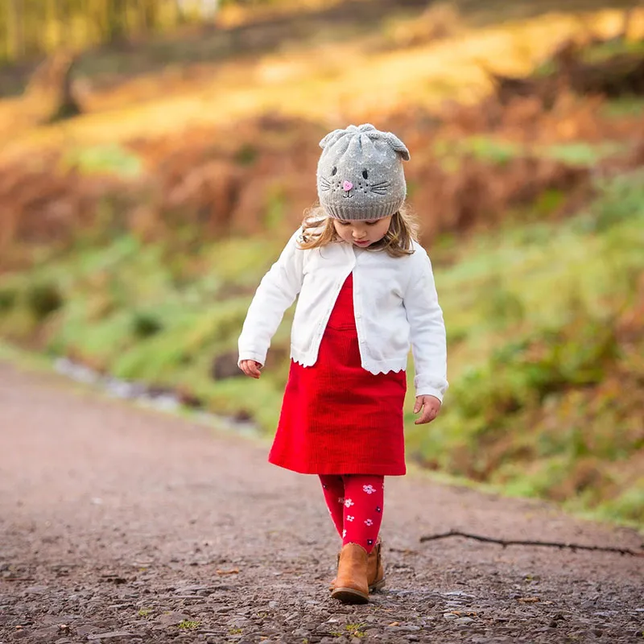
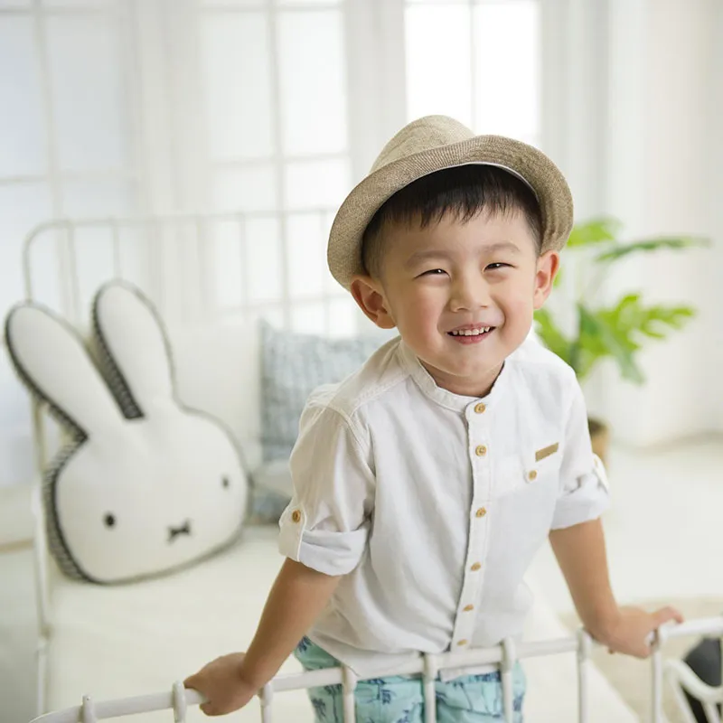
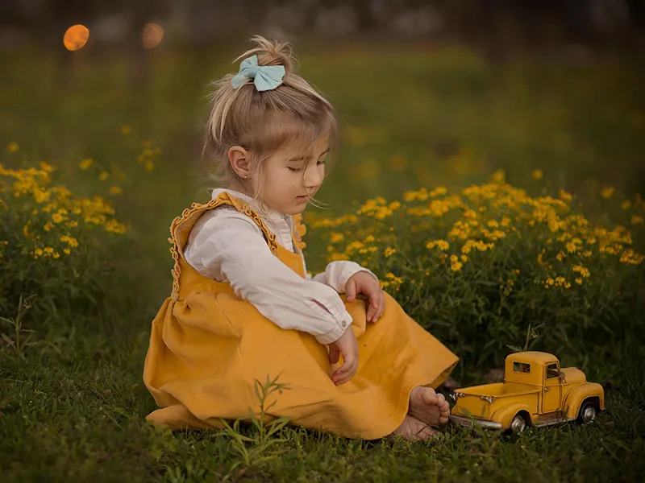
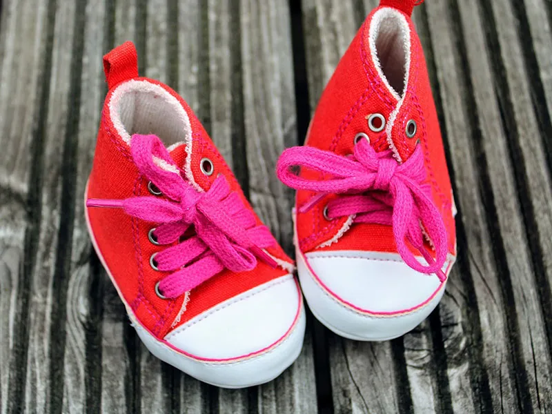
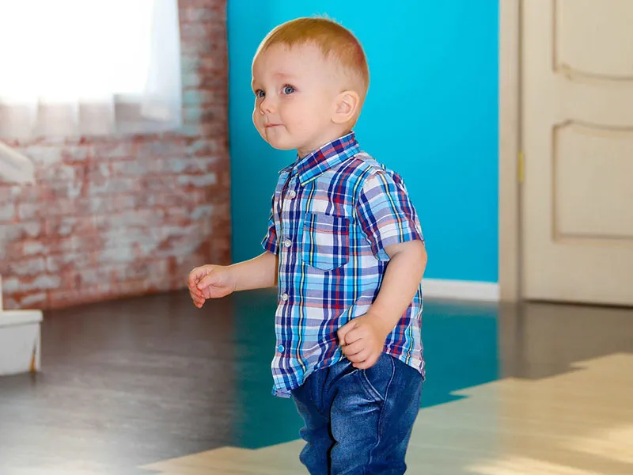

經典歐美名牌
設計理念融合了傳統的法式優雅與現代時尚元素，並且致力於提供舒適且符合高標準的服裝，讓孩子們穿得既時尚又舒適。如 Jacadi、Cyrillus、steiff、Ralph Lauren、liberty、H&M、Zara、Gap等。

日韓品牌
在設計風格上通常注重時尚、舒適和實用性，並且與當季流行的元素密切相關。不僅重視外觀設計，還兼顧質量和孩子們的穿著舒適度。如 Uniqlo、OZKIZ、Coco rabbit等。
伊甸基金會社福受贈單位
伊甸基金會「失能家庭服務計畫」深入全台各區，提供發展遲緩兒早期療育、成人身心障礙者照顧、職能訓練、無障礙生活服務、 老人及長期照顧等全人服務，帶領整個家庭脫離困境，邁向有希望的未來。

勵馨基金會社福受贈單位
勵馨本著基督精神，以追求公義與愛的決心和勇氣，預防及消弭性侵害、性剥削及家庭暴力對婦女與兒少的傷害，並致力於社會改造，創造對婦女及兒少的友善環境。

喜憨兒社會福利基金會社福受贈單位
從被服務者轉變為服務者，從資源消耗者轉變為資源創造者。改造憨兒的生命、改變心智障礙者的價值。喜憨兒烘焙屋及餐廳，提供「純真」的體驗式行銷， 更將無形的「愛心」融入在產品中，與一般商品差異化。 『喜憨兒』溫馨自立的形象，在台灣成為『心智障礙者』的代名詞，喜憨兒烘焙事業更是成為台灣社會企業之重要典範。
